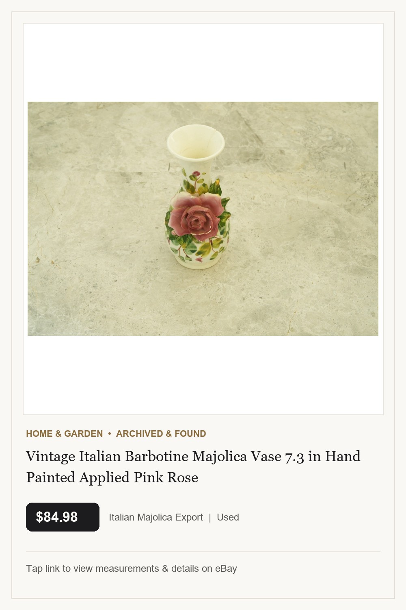
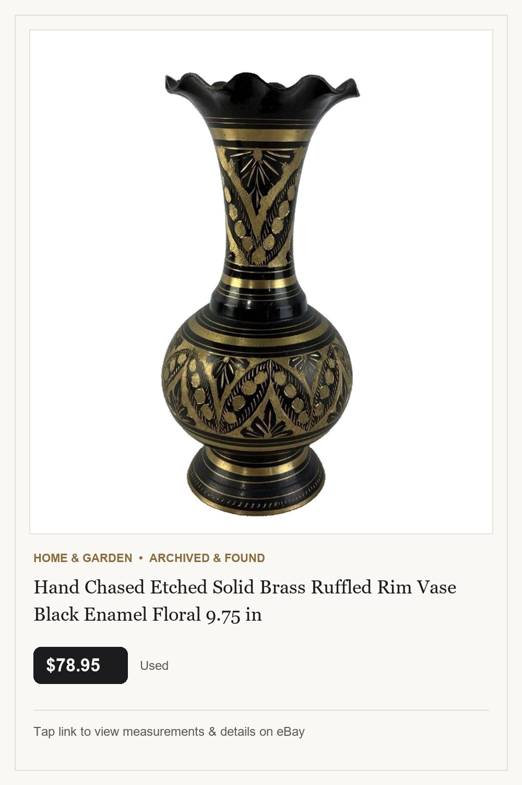

In Stock • Verified eBay Archive
In Stock • Verified eBay ArchiveRoman Charioteer Biga Sculpture Cast Metal Bronze Finish Black Marble Base 13 in
$150.00 USD
- Model: Roman Charioteer Biga Two-Horse Chariot Sculpture
- Condition: Used
- Size: 13 in L x 10 in H x 5 in W
- Color: Multicolor
- Origin: Italy
Roman Charioteer Biga Sculpture Cast Metal Bronze Finish Black Marble Base 13 in. Model: Roman Charioteer Biga Two-Horse Chariot Sculpture • Condition: Used • Size: 13 in L x 10 in H x 5 in W • Color: Multicolor • $150.00. Available via archivedandfound on eBay. #VintageHomeDecor #CuratedHome
Shop This Piece on eBay → Browse Home Décor
Related Curated Pieces

$84.98Vintage Italian Barbotine Majolica Vase 7.3 in Hand Painted Appli

$78.95Hand Chased Etched Solid Brass Ruffled Rim Vase Black Enamel Flor

$56.95Pearl China Lusterware Figurine Vase Creamer Sugar 22K Gold White

$52.49Hand Carved Wood Abstract Embracing Couple Sculpture Brown Hardwo